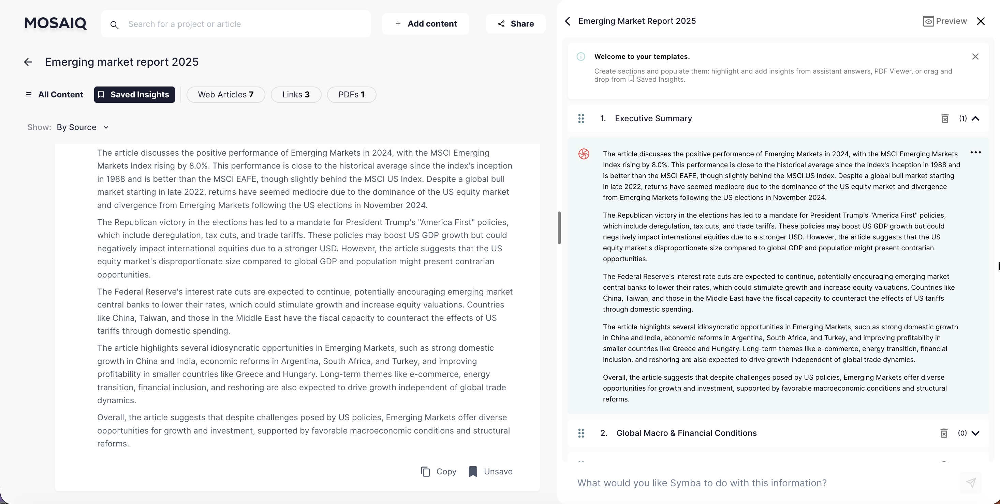
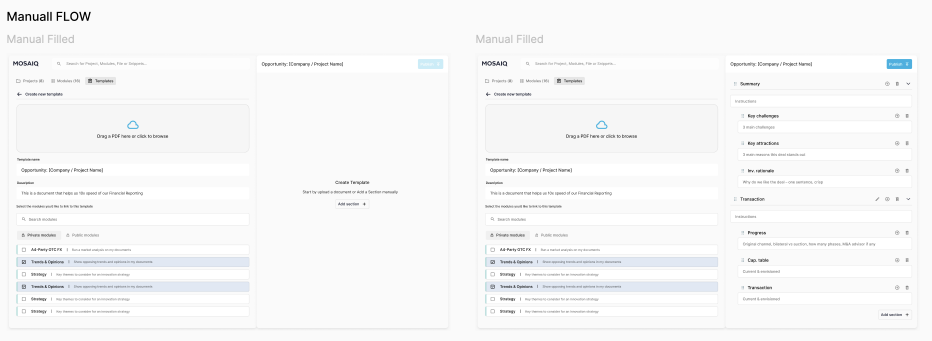
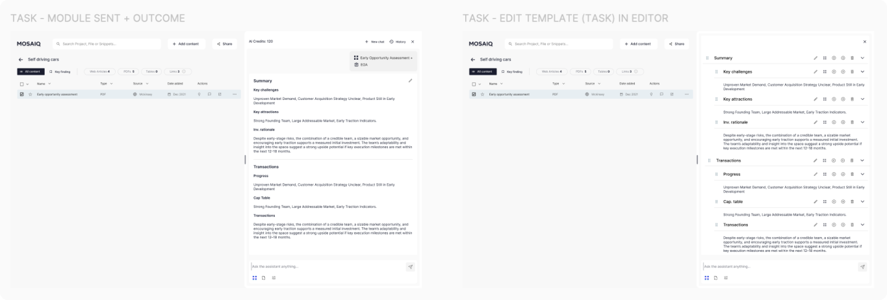
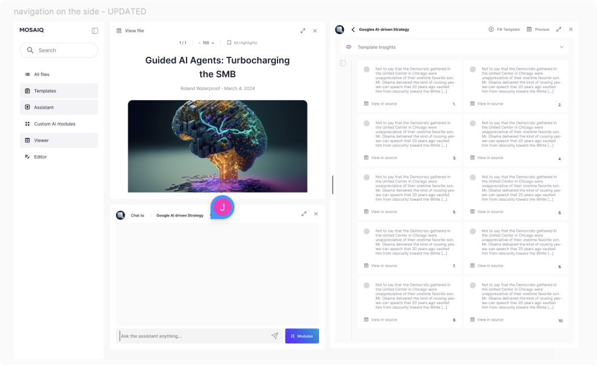

MosaiQ Labs
Full case study — designing trust in AI research workflows

NDA-safe deep dive. This case study covers shipped workflows and interaction patterns that helped finance and market-research teams manage large datasets and verify AI outputs when producing investment-grade deliverables.
The story follows three linked problems: collecting data at scale, synthesising it with AI while preserving provenance, and turning insights into repeatable deliverables.
Audience: finance consultants and researchers accountable for decision-ready outputs
Environment: large, messy datasets with changing scope and tight deadlines
Primary risk: users can’t adopt AI if they can’t quickly verify claims
High-stakes outputs: users needed to defend claims to stakeholders
Evolving AI capability: retrieval + model behaviour changed over time
Engineering-led delivery: prioritised the shortest credible path to shipped value
NDA: examples and data are anonymised
Our primary users were finance consultants and researchers responsible for recommendations under uncertainty. Their constraint wasn’t domain knowledge — it was time + accountability. They needed speed, and a defensible evidence trail.
Key needs we designed for
Collect and browse large volumes of content without losing context
Get fast synthesis — and verify what the AI used to form an answer
Organise findings into repeatable deliverables (memos, reports, summaries)

Persona image is blurred due to NDA.
1) Collecting and managing data at scale
As teams scaled their research, datasets became larger and messier: mixed file types, partial uploads, and content captured from many sources. Three problems started to block progress:
Uploading was inconsistent (different source types, parsing failures)
Browsing slowed down as databases grew
Selecting the right subset of files for analysis wasn’t always obvious
How might we…
Help users move from “I have a pile of stuff” to “I know what I’m analysing” in as few steps as possible?
Design goal
Reduce scanning and selection effort while keeping users oriented inside large research databases.
Success criteria
Users can narrow and select relevant sources quickly without losing context
Users understand upload state and failure reasons without guesswork
The interface scales as content volume grows (no “control panel” feel)

Before: limited file support and basic database browsing

After: broader file support + tabs and filters for faster skimming
We redesigned the project page into a research hub optimised for “skim → narrow → select → ask”. The objective was to make the default workflow fast for expert users without hiding critical state.
What we shipped
Checkbox selection for single/multi-select workflows (batch analysis + comparison)
Tabs to group content by type/work stage and reduce scanning
Filters placed above tabs to match “narrow first” behaviour
Clearer failure states for restricted/unparseable content (e.g., paywalls)
Trade-offs
Avoided adding too many controls (advanced filters) to prevent a “dashboard overload” experience
Prioritised the most common narrowing behaviours first; left edge-case sorting for later iteration


Browser extension for capturing multiple pages during early research
Users could add content in two ways:
From inside the project: use Add Content and choose a source type
From outside the project: use the extension to capture multiple pages quickly

“I just know where to put all my data and analyse it — my process is much smoother.”
“Whether I'm preparing a financial report or gathering passive insights for future reference, MosaiQ ensures everything is in one place. The ease of transitioning from passive accumulation to active analysis has transformed our workflows.”
Samantha, Financial Associate
“I’ve accumulated data and been able to produce investment memos 5x faster.”
“From accumulating insights on emerging sectors to diving deep into potential investments, MosaiQ is my go-to. It organises both my data and my thoughts, helping me pivot to decision-making effortlessly.”
Jasmine, Associate — Venture Capital
Synthesising data — designing trust in AI outputs
As the assistant became more capable, the core UX risk shifted from retrieval to trust. Users could get answers quickly — but before relying on them in investment decisions, they needed to verify where claims came from.
Through customer conversations and observing real workflows, one pattern was consistent: when provenance wasn’t immediately visible, users slowed down, rechecked sources manually, or avoided using the output altogether.
Design goal
Make AI outputs verifiable in seconds — without interrupting conversational flow.
Constraints
-
Users needed fast answers, so verification couldn’t introduce friction
-
Showing too much system detail by default reduced readability and increased cognitive load
-
Evidence needed to stay connected to the exact claim it supported
Decision
I designed a set of lightweight, on-demand verification patterns embedded directly in the interaction:
-
Citations showing the exact source behind each claim
-
Scope visibility indicating which files the assistant was analysing
-
On-demand reasoning, accessible when needed but hidden by default
Trade-off
Early explorations exposed full reasoning by default, but this made conversations harder to scan. Progressive disclosure provided the right balance: verification was always available without overwhelming the primary workflow.
Outcome
These patterns allowed users to verify outputs quickly and stay in flow. In customer calls and demos, teams reported higher confidence using AI-generated insights and reduced need to manually cross-reference sources.
Automatic AI insights
We added a fast “understand it now” layer per file (summary + key points) that users could save. Saved insights stayed attached to their source context so users could reopen evidence without hunting.


Saved cards lived in Saved Insights, nested under their source file to preserve provenance.
Chat verification patterns
We designed a set of lightweight, always-available cues that answer three questions: What is being analysed? Where did this claim come from? How did it get there?
What we shipped
Scope visibility: selection state + “Replying to | X files”
On-demand reasoning: reasoning available when needed, hidden by default
Focused follow-ups: Reply threading to interrogate a specific segment
Citations designed for context: readable evidence previews + “View in source”
Trade-offs
Didn’t show reasoning by default: it reduced scanability and created constant noise
Kept verification in-flow: separate “evidence pages” slowed users down and broke momentum

Selected files switch to a darker background, and scope text (e.g. “Replying to | 4 files”) clarifies what the assistant is using at the moment the user asks a question.

We used progressive disclosure for reasoning: available when users need to verify, hidden when they don’t. This kept the conversation readable while still enabling deeper inspection.

Reply threading supports investigation-style behaviour (“challenge this”, “expand that assumption”) without losing the broader thread.


Citations were tuned for quick context: readable evidence previews, support for charts/graphs/tables, and a fast path to full context via View in source.
3) Turning research into deliverables
As MosaiQ matured, customers needed more than answers — they needed repeatable deliverables. Reports and memos were the output of the job, not an export step.
How might we…
Help users turn verified insights into a structured narrative without starting from a blank page?
Design goal
Provide structure and reuse while keeping deliverables editable, defensible, and easy to iterate.
Success criteria
Users can assemble deliverables faster using saved insights and reusable structure
Outputs preserve provenance (where content came from)
Teams can standardise quality without locking into rigid formats
AI Modules
We introduced AI Modules as pre-configured tasks that produce consistent outputs (e.g., “X Report”). This reduced prompt rewriting and improved repeatability across teams.

“The perfect companion throughout my research & report-building process.”
“Working in market research means juggling vast amounts of data. MosaiQ helped me centralise it. Whether I'm passively building understanding or actively preparing a report, the platform keeps me steps ahead.”
Carlos, Research Coordinator — Market Research
Templates
Templates provided a structured canvas for building deliverables with saved insights. The intent was to reduce the blank-page problem while keeping outputs editable and defensible.
Trade-offs
Chose flexible structure over rigid “report builder” rules to match how research evolves
Optimised for assembling and editing content first; automation could be layered later (explorations below)



Templates became the main path for report building: add sections, pull in saved insights, and refine the narrative into something publication-ready.
AI Modules + Templates (concept)
We explored pairing Templates with Modules: each template section becomes a prompt linked to a module. When invoked, the deliverable keeps its structure while sections are auto-populated by the AI.
This is an exploration and was not developed.


Iterating on a flexible canvas
Another direction explored a modular “tiles” canvas to better match how people assemble narratives: move pieces, group themes, and evolve report structure as research changes.
